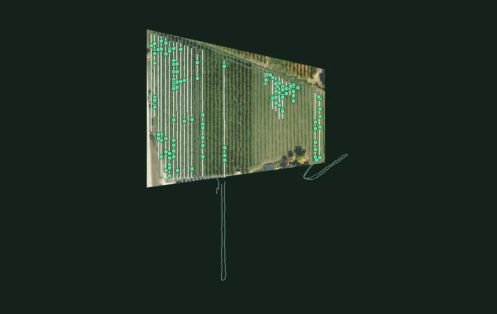

Public sample · grower identity and coordinates removed. The original grower report is unchanged.
Ground Scouting Report
Public sample
25
Rows scanned
2.46 km
Of row covered
119
Marked by operator
4.3
In-row marks per 100 m of row
Map/Overview
78 marked areas with photos from the source report
Each pin links an operator mark to its photo in the source report. Tap a pin or marked area to inspect it.
Filters
1Marked moundHeld areaPhoto

Where to look first
| Row | Marks | Per 100 m | |
|---|---|---|---|
| Row 22 | 14 | 8.8 | |
| Row 06 | 10 | 10.5 | |
| Row 01 | 7 | 24.9 | |
| Row 13 | 7 | 15.3 | |
| Row 21 | 7 | 4.4 |
Rows 22, 06 and 01 hold 31 of the 106 marks in the rows (29%). 13 more are off the rows (see the map).
About this report
- Operator marks
- Locations marked by the operator during a cart pass.
- Photos and boxes
- Photos and mound boxes are retained from the generated source report. They are not a measure of model accuracy.
- Coordinates removed
- The aerial photo is rotated and cropped to the scanned blocks. Grower details, exact dates and geographic coordinates have been removed. Imagery: Regional District of Central Okanagan, 2018 (OBWB, GeoBC). Contains information licensed under the Open Government License – Regional District of Central Okanagan. Row labels are anonymous. Row placement and distances are approximate.
- Leads, not proof
- Each mark is a spot to check on the ground, not a confirmed gopher or active burrow.